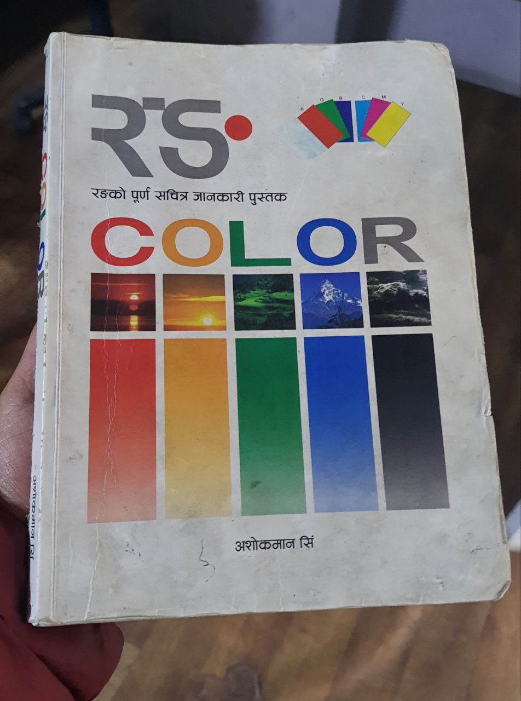
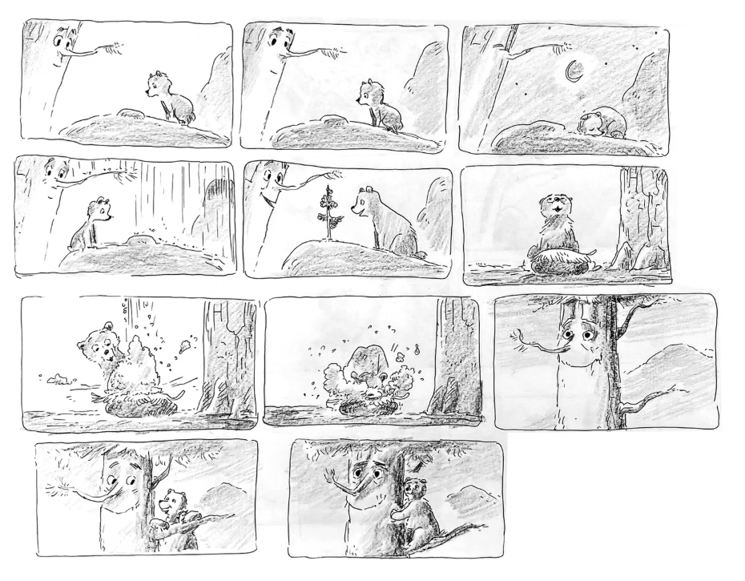
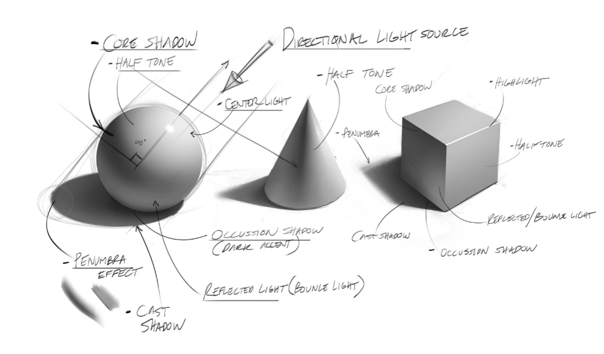
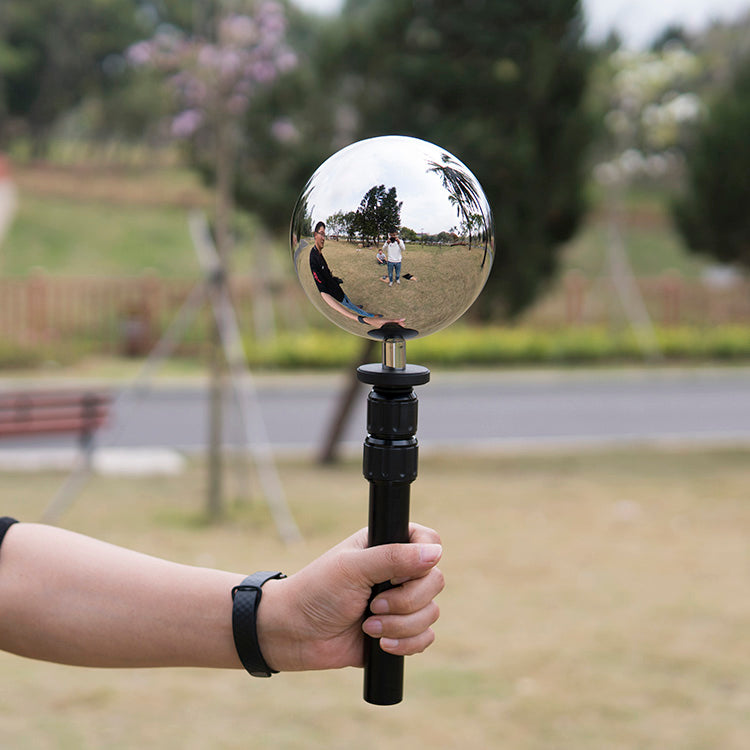
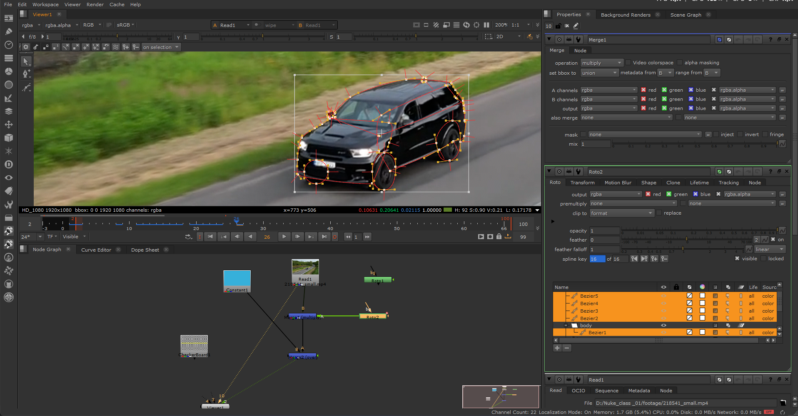

Color
I'm transitioning deeper into the VFX space to refine my visual craft, and one thing has become very clear: strong understanding of Color Theory can truly control visuals and emotion.
During this phase, I came across this book by Designer/Illustrator Ashok Man Singh, and I was genuinely impressed by the depth of its concepts.

Two ideas especially stood out to me:
- Hritu anusar rangko prabhav
- Sangitma rang ko prabhav
These perspectives made me realize that color is not just about palettes, it's about psychology, atmosphere, and emotional control.
Here's the link to purchase the book.
I watched this animated short film FOREVERGREEN and what stood out to me wasn't just the animation, it was the use of color theory to build emotional and visual depth. I was recommended to observe this short film by a VFX Supervisor working in Nepali film industry.

In this learning process I came across Adobe Color. Do check it out to learn practically about color harmony.
Typography
Typography is far more than choosing a stylish font. It is about integrating text seamlessly into a visual world. In visual effects, typography must feel like it belongs inside the scene, whether it's a cinematic title, a holographic interface, motion-tracked signage, or futuristic HUD elements. Good VFX typography enhances storytelling; poor typography breaks immersion instantly.
Typography enhances immersion and realism. In VFX, text often exists inside a 3D environment. If typography is poorly chosen or badly integrated, it immediately feels fake. However, when the font style matches the genre and the lighting, depth, and motion are aligned with the environment, the text feels like it truly belongs in that world.
Lighting, shading & rendering
Lighting in VFX is one of the most important elements that determines whether a shot feels believable or artificial. No matter how detailed a 3D model or simulation is, without proper lighting, shading, and rendering, the final result will not integrate naturally into live-action footage. Lighting is what connects digital elements to the real world.

Lighting defines mood, depth, realism, and focus. In VFX, artists must match the lighting conditions of the original footage. This includes direction of light, intensity, color temperature, softness, shadow quality, and environmental bounce light. If a 3D object is placed into a scene but the lighting direction does not match the practical light source, the illusion breaks immediately.
Image-Based Lighting (IBL) is commonly used, where HDRI maps captured on set help recreate real-world lighting conditions inside 3D software. This ensures that reflections, highlights, and shadows behave naturally.

Here's a recommended video from my side.
My Journey into VFX
Understanding color, lighting, and VFX concepts felt much more intuitive for me because I already had a foundation in cameras, Photoshop, and After Effects. Working with cameras taught me how light behaves in real environments, how exposure affects mood, how white balance shifts temperature, and how shadows define depth. Photoshop gave me hint of matte painting and after effects taught how to enhance realism with subtle details like grain and light wrap.
I moved into Element 3D to explore 3D inside After Effects. This was a turning point. Element 3D allowed me to work more deeply with lighting, reflections, materials, and 3D space. I started understanding how shaders respond to light, how environment maps affect reflections, and how different light types change the mood of a scene. I experimented with HDRI lighting, shadows, and render settings.
Now, I've stepped into Nuke. Moving from layer-based compositing to a node-based workflow completely changed how I approached shots.

I'm still learning. Still exploring. Still figuring things out.
Even after working with cameras, Photoshop, After Effects, Element 3D, and now stepping into Nuke, I don't see myself as someone who has "arrived." If anything, the more I learn, the more I realize how much there is to understand. VFX, lighting, color, compositing-it's an endless ocean. And that's what makes it exciting.
The Importance of Unlearning
One thing I've realized along this journey is that learning alone isn't enough. Unlearning is just as important.
Unlearning means stepping back and asking:
- Why am I doing it this way?
- Is this technically correct, or just familiar?
- Is there a more realistic or efficient approach?
Being "still learning" keeps me curious. It keeps ego out of the process. It reminds me that every project is an opportunity to improve.
In VFX and design, technology changes fast. Tools evolve. Workflows improve. Industry standards shift. If I stay rigid, I fall behind. If I stay curious, I grow. That is why the title reads "Phase 0 of VFX". Everything I've shared here are the fundamentals that needs to be super clear before diving deeper into VFX.